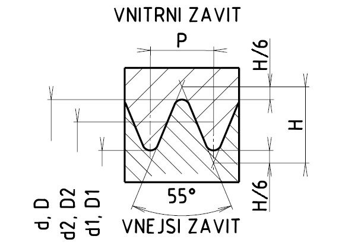

Zvláštní závity pro jízdní kola se označují jmenovitým průměrem a počtem závitů na 1 palec (na 25,4 mm), např.
34,7 × 24Levý závit se označí písmenem L, například
34,7 × 24 L| Závit podle ČSN 01 4045 | Počet roztečí na 1 in | Rozteč [mm] | Průměry závitu [mm] | Příklady použití | |||
|---|---|---|---|---|---|---|---|
| d = D | d2 = D2 | d1 = D1 | |||||
| 2,09 × 56 | 56 | 0,4536 | 2,096 | 1,854 | 1,613 | Paprsky a matice paprsků | |
| 2,29 × 56 | 56 | 0,4536 | 2,299 | 2,057 | 1,816 | ||
| 2,6 × 56 | 56 | 0,4536 | 2,604 | 2,362 | 2,121 | ||
| 7,9 × 56 | 56 | 0,9769 | 7,938 | 7,418 | 6,897 | Vřeteno řízení a osa předního náboje | |
| 9,5 × 26 | 26 | 0,9769 | 9,525 | 9,004 | 8,484 | Osa zadního náboje | |
| 14,2 × 20 | 20 | 1,2700 | 14,288 | 13,611 | 12,934 | Čep šlapátka | |
| *25,4 × 24 | 24 | 1,0580 | 25,400 | 24,836 | 24,272 | Sloupek vidlice | |
| *34,7 × 24 | 24 | 1,0580 | 34,798 | 34,234 | 33,670 | Středové složení a volnoběžný pastorek | |
| Závity s úhlem profilu α = 55°C | |||||||
| 7 × 28 | 28 | 0,9071 | 7,000 | 6,419 | 5,838 | Kužel šlapátka | |
| 10,5 × 26 | 26 | 0,9769 | 10,550 | 9,924 | 9,298 | Kužel volnoběžných nábojů | |
| 33 × 24 | 24 | 1,0583 | 33,000 | 32,323 | 31,646 | Pojistné matice | |
| *34,9 × 24 | 24 | 1,0583 | 34,900 | 34,223 | 33,546 | Volnoběžný zadní náboj | |